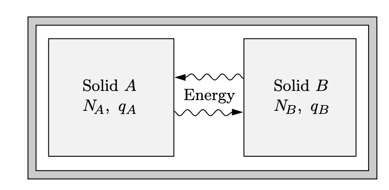
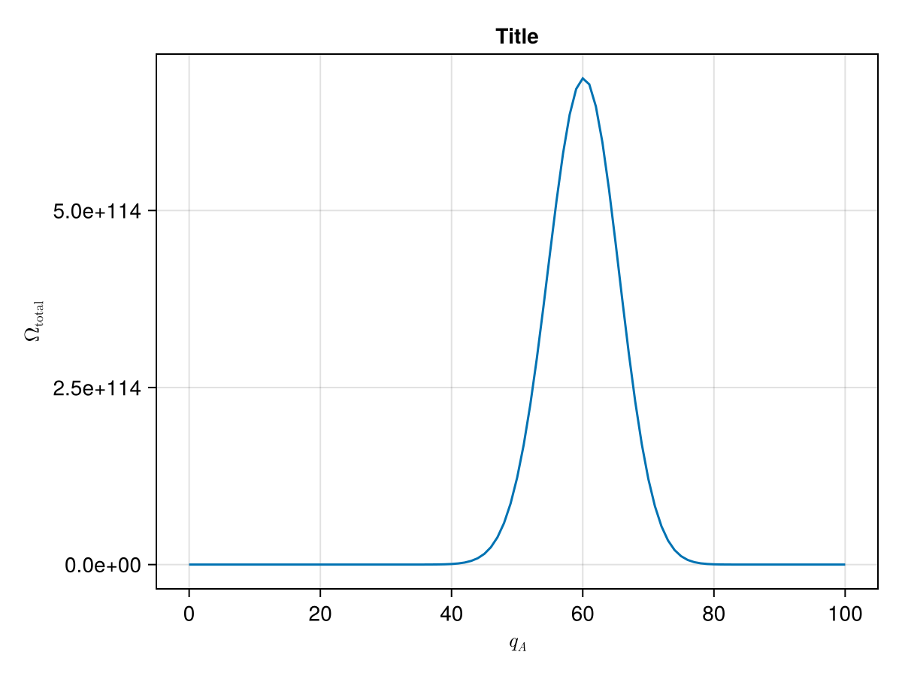
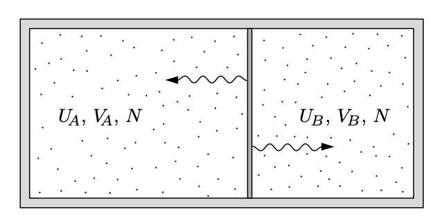

% %
%
\[ \DeclarePairedDelimiters{\set}{\{}{\}} \DeclareMathOperator*{\argmax}{argmax} \]
23.1 아인슈타인 고체 모델
작은 아인슈타인 고체 시스템
특성진동수가 \(\omega\) 인 1차원 양자 진동자의 경우 \(n\) 번째 준위 에서의 에너지 \(E_n\) 은
\[ E_n = \hbar \omega \left(n + \dfrac{1}{2}\right),\qquad n=0,\,1,\,2,\ldots \]
임을 안다. 아인슈타인은 고체를 양자 진동자로 모델링 했으며 앞으로 이를 아인슈타인 고체 (Einstein solid) 라고 하자.
\(N\) 개의 1차원 진동자로 이루어진 시스템을 생각하자. \(i\) 번째 진동자의 준위를 \(n_i\) 라고 하자. \(n=n_1+\cdots + n_N\) 이라고 하면 가능한 경우의 수 \(\Omega(N,\,n)\) 은
\[ \Omega (N,\,n) = \begin{pmatrix} n+N-1 \\ n \end{pmatrix} = \dfrac{(n+N-1)!}{n! (N-1)!}. \tag{23.1}\]
이 때 \(n\) 을 \(n\) 개의 에너지 단위로 간주 할 수 있다.
다음과 같이 두 아인슈타인 고체가 에너지를 주고 받을 수 있다고 하자. 각각을 \(A,\,B\) 라고 부르자(그림 23.1). 우선 \(A\) 와 \(B\) 사이의 에너지 교환이 \(A,\,B\) 내부에서의 에너지 교환보다 매우 느리다고 가정하며 이를 약한 결합(weakly coupled) 조건 이라고 한다. 그렇다만 \(A\) 와 \(B\) 의 에너지 \(U_A,\,U_B\) 는 매우 느리게 변하며 충분히 작은 시간 스케일에서 \(U_A,\,U_B\) 는 고정되어 있다고 볼 수 있다. 그리고 (일시적으로 고정된) \(U_A\) 와 \(U_B\) 에 의해 정해지는 이 두 고체의 결합된 상태를 거시상태 (macrostate) 라고 부르기로 하자. 그러나 충분히 큰 시간 스케일에서는 \(U_A,\,U_B\) 는 변하며 \(U_A,\,U_B\) 각각에 허용된 값에 대한 모든 가능한 거시항태를 따져야 한다. 물론 \(U_\text{total} = U_A+U_B\) 는 고정되어 있다.

\(A\) 와 \(B\) 가 각각 \(N_A,\,N_B\) 개의, 특성 진동수 \(\omega\) 인 진동자로 이루어진 아인슈타인 고체라고 하자. \(A\) 의 에너지 단위를 \(q_A\), \(B\) 의 에너지 단위를 \(q_B\) 라고 하자. 그렇다면 \(A\) 와 \(B\) 각각에 가능한 경우의 수 \(\Omega_A,\,\Omega_B\) 를 식 23.1 를 이용하여 계산 할 수 있다. \(U_A,\,U_B\) 는 \(q_A,\,q_B\) 로 정해지며 두 아인슈타인 고체로 이루어진 전체 시스템의 거시상태의 개수 \(\Omega_\text{total} = \Omega_A \Omega_B\) 이다. 예를 들어 \(N_A=N_B=3\), \(q_A+q_B=6\) 이라면 \(\Omega_\text{total} = 462\) 이다.
| \(q_A\) | \(\Omega_A\) | \(q_B\) | \(\Omega_B\) | \(\Omega_\text{total} = \Omega_A \Omega_B\) |
|---|---|---|---|---|
| 0 | 1 | 6 | 28 | 28 |
| 1 | 3 | 5 | 21 | 63 |
| 2 | 6 | 4 | 15 | 90 |
| 3 | 10 | 3 | 10 | 100 |
| 4 | 15 | 2 | 5 | 90 |
| 5 | 21 | 1 | 3 | 63 |
| 6 | 28 | 0 | 1 | 28 |
그리고 여기서 우리는 중대한 가정 혹은 공리를 도입해야 한다.
통계역학의 기본원리에 따르면 앞에서 다룬 아인슈타인 고체의 가능한 462 개의 미시 상태 각각은 동일한 확률을 가진다. 하지만 거시상태에 각각에 대한 확률은 다른데 이는 표 23.1 에서 확인 할 수 있다.
\(N_A, N_B, q_A+q_B\) 값이 클 경우 컴퓨터를 이용하여 계산 할 수 있다. 예를 들어
\[ N_A=300,\quad N_B=200,\quad q_A+q_B=100 \]
인 경우 \(q_A=0,\,q_B=100\) 일 때 최소값 \(\Omega_\text{total}=2.8\times 10^{81}\) 을 가지며 \(q_A=60,\,q_B=40\) 일 때 \(\Omega_\text{total}=6.9\times 10^{114}\) 인 최대값을 가진다. 최소값과 최대값으 비율은 \(10^{33}\) 정도로 매우 크다. \(q_A\) 에 대한 \(\Omega_\text{total}\) 을 그리면 아래와 같다. 정규분포곡선과 유사하며 \(q_A\) 가 56 에서 64 까지의 합이 전체의 60 % 정도를 차지한다. 통계역학의 기본원리에 의하면 이 시스템은 전체 시간의 60 % 정도를 \(56 \le q_A \le 64\) 인 미시상태에 존재한다.

이제 이 시스템이 초기에 \(q_A \ll 60\) 인 상태에서 시작했다고 하자. 충분한 시간이 흐른다면 어느 정도의 에너지가 \(B\) 에서 \(A\) 로 이동하는 것을 발견 할 수 있을 것이다. 그리고 대부분의 시간을 \(q_A\) 가 60 근처인 미시상태에 머무르게 된다. 이것은 비가역적인 변화이다. 우리는 여기서 열에 대한 어떤 설명을 얻을 수 있다. 이것은 확률적인 현상이다. 절대적이지는 않지만 대단히 그러한 경향이 있다. 에너지의 자발적 흐름은 시스템이 가장 확률이 높은 상태에 있을 때 멈추게 된다. 이것은 열역학 제 2 법칙의 한가지 버젼이다.
거시적인 계는 대략 \(10^{23}\) 개 혹은 그 이상의 입자를 다룬다. 컴퓨터로도 다루기 힘들지만 우리에게는 잠시 후 다룰 유용한 수학적인 도구가 있다.
거대 시스템
스털링 근사 는 큰 \(N\) 에 대해 다음이 성립한다는 것을 알려준다.
\[ N! \approx N^N e^{-N}\sqrt{2\pi N},\qquad \text{where }N \gg 1 \tag{23.2}\]
통계역학에서는 \(\ln (N!)\) 을 많이 사용하며
\[ \ln N! \approx N\ln N - N + \dfrac{1}{2}\ln (2\pi N) \tag{23.3}\]
인데 여기서 세번째 \(\ln (2\pi N)\) 은 나머지 두 항에 비해 매우 작기때문에 실제 많이 사용되는 근사는
\[ \ln N! \approx N \ln N - N \tag{23.4}\]
이다.
이제 스털링 근사를 사용하여 많은 진동자와 에너지 단위를 가진 아인슈타인 고체 모델을 알아보자. 즉 \(N\gg 1,\,q \gg 1\). 우선 \(q\gg N\) 인 경우, 즉 에너지 단위가 진동자의 수보다 매우 큰 경우를 알아보자. 이것은 온도가 매우 높은 경우에 타당하다. 그렇다면
\[ \Omega (N,\,q) = \dfrac{(q+N-1)!}{q! (N-1)!} \approx \dfrac{(q+N)!}{q!N!} \tag{23.5}\]
이며, 스털링 근사를 이용하면
\[ \ln \Omega \approx (q+N)\ln (q+N) - q \ln q -N \ln N \tag{23.6}\]
이며, 여기서 \(0<\delta \ll 1\) 에 대해 \(\ln(1+\delta) \approx \delta\) 임을 이용하면
\[ \ln (q+N) = \ln q(1+N/q) = \ln q + \ln (1+N/q) = \ln q + \dfrac{N}{q} \]
이다. 이로부터
\[ \ln \Omega \approx N \ln \dfrac{q}{N} + N + \dfrac{N^2}{q} \tag{23.7}\]
이다. \(q\gg N\) 근사에서 \(N^2/q \ll 1\) 이므로 마지막 항을 무시 할 수 있다. 이로부터
\[ \Omega(N,\,q) \approx e^{N \ln (q/N) + N} = \left(\dfrac{eq}{N}\right)^N. \tag{23.8}\]
이것은 매우 큰 수이다.
분포의 뾰족함
이제 두 거대한 아인슈타인 고체가 열적으로 접촉하고 있는 경우에 대해 알아보자. 문제를 간단하게 하기 위해 두 아인슈타인 고체가 각각 \(N\) 개의 진동자로 이루어졌다고 하고 두 고체의 에너지 단위를 \(q_A,\, q_B\), 전체 에너지 단위를 \(q=q_A+q_B\) 라고 하자. 앞서와 같이 \(q\gg N\) 이라고 가정한다. 그렇다면 식 23.8 로 부터 전체 미시상태의 개수
\[ \Omega = \left(\dfrac{eq_A}{N}\right)^N\left(\dfrac{eq_B}{N}\right)^N = \left(\dfrac{e}{2N}\right)^N(q_A q_B)^{N} \tag{23.9}\]
이다. \(\Omega\) 의 최대값은 \(q_A=q_B\), 즉 \(q=q_A/2=q_B/2\) 일 때 이며 이 경우
\[ \Omega_\text{max} = \left(\dfrac{e}{N}\right)^{2N} \left(\dfrac{q}{2} \right)^{2N} \tag{23.10}\]
이다. 우리는 주로 이 값 근처에서 관심이 있으므로 \(q_A=q/2+x,\, q_B=q/2-x\) 로 놓을 수 있다. 그렇다면 식 23.9 는 \[ \Omega = \left(\dfrac{e}{2N}\right)^N \left[\left(\dfrac{q}{2}\right)^2-x\right]^N \tag{23.11}\]
이다. 이 때 \(q\gg 2|x|\) 조건에서, 그리고 \(|\delta| \ll 1\) 조건에서 \(\ln (1-\delta) \approx -\delta\) 근사를 사용하면
\[ \begin{aligned} \ln\left[\left(\dfrac{q}{2}\right)^2-x\right]^N &= N \ln \left[\left(\dfrac{q}{2}\right)^2-x\right] = N \ln \left[\left(\dfrac{q}{2}\right)^2\left(1-\left(\dfrac{2x}{q}\right)^2 \right)\right] \\[0.3em] &= N \ln \left(\dfrac{q}{2}\right)^2 + N \ln \left(1-\left(\dfrac{2x}{q}\right)^2 \right) \\[0.3em] &\approx N \left[\ln \left(\dfrac{q}{2}\right)^2 - \left(\dfrac{2x}{q}\right)^2\right] \end{aligned} \]
이다. 이를 식 23.11 에 대입하면
\[ \Omega \approx \left(\dfrac{e}{2N}\right)^N e^{N \ln (q/2)^2} e^{-N (2x/q)^2} =\Omega_\text{max} e^{-(2x/q)^2} \tag{23.12}\]
으로 우리는 \(x=0\) 을 중심으로 하는 가우시안 함수를 얻는다. 이 때 \(\Omega = \Omega_\text{max}/e\) 가 되는 \(x\) 값은
\[ x=\pm \dfrac{q}{2\sqrt{N}} \]
이다. 우리는 이 분포의 폭 \(\Delta\) 를 위 \(x\) 값의 두배
\[ \Delta = \dfrac{q}{\sqrt{N}} \]
으로 정할 수 있다. 우리의 가정에서 \(q\gg N \gg 1\) 이며 이는 정해진 \(q\) 값에 대해 \(\Delta \ll q\) 임을 말한다. 일반적으로 다루는 열역학 시스템에서 \(N\approx 10^{23}\) 이며 이는 미시상태의 분포가 최대값 근처의 좁은 영역에 몰려 있으며 가장 확률이 높은 거시상태로부터 멀리 떨어진 상태에 있을 확률이 지극기 작다는 것을 의미한다. 즉 모든 미시상태에 대한 확률이 동일한 열평형 상태에서 시스템은 가장 확률이 높은 거시상태에 존재한다. 시스템이 매우 크다면 가장 확률이 높은 거시상태로부터의 측정 가능한 fluctuation 은 거의 존재할 수 없다. 이것을 열역학적 극한 이라고 한다.
연습문제
연습문제 23.1 (Schroeder 2.17) \(q \ll N\) 인 근사를 사용하여 식 23.8 과 유사한 식을 구하라. 이것은 온도가 매우 낮은 경우에 타당하다.
(해답). 식 23.6 까지는 \(q \ll N\) 이어도 성립한다. 여기서
\[ \ln (q+N) = \ln N + \ln (1+q/N) \approx \ln N + q/N \]
이며 이로부터
\[ \ln \Omega \approx q \ln \left(\dfrac{N}{q}\right) +q \]
이며, 따라서
\[ \Omega (N,\,q) \approx \left(\dfrac{eN}{q}\right)^q \]
연습문제 23.2 (Schroeder 2.18) 스털링 근사를 사용하여 큰 \(N\) 과 \(q\) 에 대해 다음이 성립함을 보여라.
\[ \Omega (N,\,q) \approx \dfrac{\left(\dfrac{q+N}{q}\right)^q\left(\dfrac{q+N}{N}\right)^N}{\sqrt{2\pi q (q+N)/N}} \tag{23.13}\]
일반적으로 분모는 무시되지만 그렇지 않을 때도 있다.
(해답). 식 23.5 에서
\[ \begin{aligned} \Omega (N,\,q) &= \dfrac{(q+N-1)!}{q! (N-1)!} = \dfrac{N}{q+N}\dfrac{(q+N)!}{q! N!} \\[0.3em] \end{aligned} \]
이므로 식 23.3 을 이용하면
\[ \begin{aligned} \ln \Omega (N,\,q) &= \ln \left(\dfrac{N}{q+N}\right) + \ln (q+N)! - \ln q! - \ln n! \\[0.3em] &\approx \ln \left(\dfrac{N}{q+N}\right) + q\ln \left(\dfrac{q+N}{q}\right) + N \ln \left(\dfrac{q+N}{N}\right) + \dfrac{1}{2}\ln \left(\dfrac{q+N}{2\pi qN}\right) \\[0.3em] &= q\ln \left(\dfrac{q+N}{q}\right) + N \ln \left(\dfrac{q+N}{N}\right) + \dfrac{1}{2}\ln \left(\dfrac{N}{2\pi q (q+N)}\right) \end{aligned} \]
이며 이것을 정리하면 식 23.13 을 얻는다.
연습문제 23.3 (Schroeder 2.22) 아인슈타인 고체 모델에서 \(q\gg N\) 근사를 사용하지 않는다.
(\(a\)) \(N\) 개의 진동자를 가진 두 아인슈타인 고체가 열적으로 접촉하고 있다. 에너지 단위의 합이 \(2N\) 일 때 얼마나 많은 거시상태가 가능한가?
(\(b\)) 연습문제 23.2 의 결과를 이용하여 이 시스템의 미시시상태의 개수를 구하라. 전체를 \(2N\) 개의 진동잘르 가진 하나의 시스템으로 간주하라.
(\(c\)) 가장 확률이 높은 거시상태는 두 고체의 에너지가 같을 때이다. 연습문제 23.2 의 결과를 이용하여 이 거시상태에 해당하는 미시상태의 수를 구하라.
(\(d\)) (\(b\)) 와 (\(c\)) 의 결과를 비교하여 \(\Omega (N,\,q)\) 의 뾰족함에 대한 대략적인 아이디어를 얻을 수 있다. (\(c\)) 는 분포의 최대값을, (\(b\)) 는 총 넓이를 준다. 매우 엉성한 근사로서 분포가 직사각형이라고 하면 그 폭은 얼마나 되는가? 모든 거시상태에서 얼마나 많은 비율이 높은 확률을 가지는가? 이 비율을 \(N=10^{23}\) 의 경우에서 평가하라.
(해답). (\(a\)) \(q_A\) 는 \(0\) 부터 \(2N\) 까지의 값을 가질 수 있으므로 \(2N+1\) 개의 거시상태가 가능하다.
(\(b\)) 식 23.5 로부터, 그리고 스털링 근사 식 23.2 를 이용하면
\[ \begin{aligned} \Omega_\text{total} &= \dfrac{(4N-1)!}{(2N)!(2N-1)!} = \dfrac{1}{2} \dfrac{(4N)!}{(2N)!(2N)!} \\[0.3em] &\approx \dfrac{1}{2}\dfrac{(4N)^{4N}e^{-4N}\sqrt{2\pi (4N)}}{(2N)^{4N} e^{-4N}(2\pi 2N)} \\[0.3em] &= \dfrac{2^{4N}}{\sqrt{8\pi N}} \end{aligned} \]
(\(c\)) \(q_A=q_B=N\),
\[ \Omega_\text{max} = \Omega_{A,\text{max}}\Omega_{B,\text{max}}= \left(\dfrac{2^N 2^N}{\sqrt{2\pi (2N)}}\right)^2 = \dfrac{2^{4N}}{4\pi N} \]
(\(d\)) 폭을 \(\Delta\) 라고 하면 \(\Delta = \Omega_\text{total}/\Omega_\text{max} = \sqrt{\pi N/2}\) 이다. 전체 상태 수는 \(2N+1\) 이므로 전채 상태 수에서 높은 확률을 가지는 비율은 \(\dfrac{\sqrt{\pi N/2}}{2N+1}\) 이며 \(N=10^{23}\) 일 경우 \(2.0 \times 10^{-12}\) 정도이다.
23.2 이상기체
단원자 분자 이상기체의 미시상태 수
우리는 앞서 큰 수의 진동자를 가진, 열적으로 연결된 두 아인슈타인 고체의 경우 가능한 전체 거시상태의 개수 가운데 매우 작은 비율만 어느정도로 나타날 수 있는 확률을 가진다는 것을 확인했다. 이것은 비단 아인슈타인 고체 뿐만 아니라 거의 모든 상호작용하는 다수의 입자로 이루어진 시스템에도 성립한다. 여기서는 이상기체에 적용하여 다루어 보도록 한다.
부피 \(V\) 안의 \(N\) 개의 입자가 가질 수 있는 미시상태의 개수는 주어진 조건(예를 들면 총 에너지의 합) 에서 이 계가 접근 가능한 위상공간(phase space)의 부피를 플랑크 상수 \(h^{3N}\) 로 나눈 값에, 구분불가능 할 경우 양자역학에서와 같이 \(1/N!\) 을 곱해줘야 한다. 예를 들어 입자의 총 에너지가 \(E\)
\[ \Omega(N,\,E) = \dfrac{1}{N!}\dfrac{1}{h^{3N}}\int_{U=E} d^3r\,d^3p ,\qquad \text{(동일한 입자의 경우)} \]
이다. 단원자 분자 이상기체의 경우 에너지는 위치에 무관하므로 \(\int d^3r=V^N\) 이며,
\[ \int_{U=E}\,d^3p = \text{[Area of momentum space]} \]
이다. 우리는 \(3N\) 차원 공간에서의 구의 표면적이
\[ \text{반지름이 }r\text{ 인 }d\text{ 차원 공ㅋ간의 구의 표면적} = \dfrac{2\pi^{d/2}}{\left(\dfrac{d}{2}-1\right)!} r^{d-1} \tag{23.14}\]
임을 이용한다. 그렇다면 부피 \(V\) 안의 \(N\) 개의 단원자 이상기체의 총 에너지가 \(U\) 일 때 가질 수 있는 미시상태의 수
\[ \Omega (U,\,V,\,N) = \dfrac{1}{N!} \dfrac{V^{N}}{h^{3N}} \dfrac{2\pi^{3N/2}}{(3N/2-1)!} \left(\sqrt{2mU}\right)^{3N-1} \tag{23.15}\]
이다. 운동량 공간에서의 반지름은 총 에너지 \(\sum_{i=1}^N \|\boldsymbol{p}_i\|^2 = 2mU\) 로부터 구한다. 위 식 23.15 은 다음과 같이 근사시킬 수 있다\(^1\).
\[ \Omega (U,\,V,\,N) \approx \dfrac{1}{N!} \dfrac{V^{N}}{h^{3N}} \dfrac{\pi^{3N/2}}{(3N/2)!} \left(\sqrt{2mU}\right)^{3N}. \tag{23.16}\]
위 식에서 \(U,\,V,\,N\) 에 대한 의존성을 분리하면 다음과 같이 쓸 수 있다.
\[ \Omega (U,\,V,\,N) = \phi(N) V^N U^{3N/2}. \tag{23.17}\]
상호작용하는 이상기체

각각 \(N\) 개의 단원자 분지로 \(V_A,\, V_B\) 의 부피를 갖는 이상기체가 \(U_A,\,U_B\) 의 에너지를 가지고 있다고 하자. 그렇다면 이 시스템의 미시상태의 수는
\[ \Omega_\text{total} = \Omega_A \Omega_B = [\phi(N)]^2 (V_AV_B)^N (U_A U_B)^{3N/2} \]
이다. 이 식은 아인슈타인 고체의 경우(식 23.9) 와 본질적으로 같다. \(N\) 값이 크기 때문에 각각의 에너지가 증가함에 따라 미시상태의 수는 급격하게 증가하며 반대쪽은 급격하게 감소하므로 \(\Omega_\text{total}\) 은 어떤 값을 중심으로 매우 뾰족한 값을 가진다는 것을 예측 할 수 있다. 아인슈타인 고체와 마찬가지로 중심에서의 에너지 분포의 폭 \(\Delta_U\) 는 \(U_\text{total} = U_A + U_B\) 에 대해 다음과 같을 것이다.
\[ \Delta_U = \dfrac{U_\text{total}}{\sqrt{3N/2}}. \tag{23.18}\]
\(N\) 값이 클수록 \(U_A\) (혹은 \(U_B\)) 가 가질 수 있는 값중애 메우 일부만 어느 이상의 미시상태 수를 가지며 나머지는 매우 작은 값만 갖게 된다.
이제 에너지 뿐만 아니라 부피도 변할 수 있다고 하자. 그렇다면 부피 변화의 폭 \(\Delta_V\) 역시 \(V_\text{total}=V_A+V_B\) 에 대해 다음과 같다.
\[ \Delta_V = \dfrac{V_\text{total}}{\sqrt{N}}. \tag{23.19}\]
\(\Omega_\text{total}\) 을 \(U_A\) 와 \(V_A\) 의 함수로 표현하면 어떤 값 \(U_A^0,\, V_A^0\) 의 매우 가까운 근처를 제외하면 무시할 만큼 작다. 즉 평형 상태가 실질적으로 정해진다.
이제 그림 23.3 에서 \(A\), \(B\) 사이에 입자가 통과할 수 있는 작은 구멍이 있다고 해 보자. 그리고 \(V_A=V_B\) 로 고정되어 있다고 하자. 컨테이너에 \(N\) 개의 분자들이 있을 때 모든 분자들이 \(V_A\) 에 있을 미시상태의 수는 식 23.17 로 부터
\[ \dfrac{\Omega(U,\, V/2,\,N)}{\Omega (U,\,V,\,N)} = 2^{-N} \]
이며 \(N\) 이 크다면 이 값은 실질적으로 \(0\) 과 차이가 없게 된다. 즉 모든 분자들이 한쪽으로 몰리는 일은 일어나지 않는다.
엔트로피
지금까지 우리는 몇몇 시스템에서 입자와 에너지가 미시상태의 개수가 최대가 되는 거시상태가 되도록 배치된다는 것을 보았다. 이것은 충분히 많은 입자의 수와 에너지가 있을 때 항상 성립한다. 이를 위해 통계역학적 엔트로피 \(S\) 를 다음과 같이 정의한다.
즉 평형 상태에서는 엔트로피는 항상 최대값을 찾아 간다.
우리는 열역학적으로 엔트로피와 열역학 제 2 법칙을 살펴보았다. 그리고 이제 통계역학적으로 엔트로피와 열역학 제 2 법칙을 정의하고 이 두가지고 모두 동일하다는 것을 보일 것이다.
우선 아인슈타인 고체의 경우의 엔트로피를 계산해 보자. \(N\) 개의 진동자와 \(q\) 개의 에너지 단위로 이루어진 아인슈타인 고체는 \(q\gg N\) 일 때 식 23.8 로 부터
\[ S = Nk_B\left(\ln q-\ln N +1\right) \tag{23.21}\]
이며 \(N=10^{22}\), \(q=10^{24}\) 일 때 \(S=0.774 \text{ J/K}\) 이다.